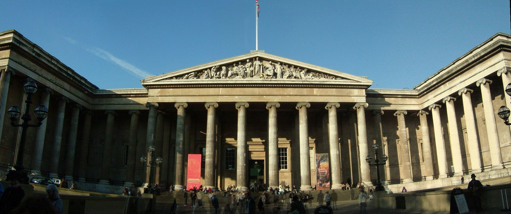

British Museum
Fondat în 1753, British Museum (Muzeul Britanic) este unul dintre cele mai vechi și mai impozante muzee din lume, cu exponate variind de la mumii egiptene la comori romane.British Museum a fost fondat în anul 1753, fiind primul muzeu național public din lume. Încă de la început admitea intrarea liberă pentru „toate persoanele studioase și curioase”.
Originile muzeului le găsim în testamentul unui medic, naturalist și colecționar, Sir Hans Sloane (1660 – 1753). De-a lungul vieții sale acesta a colecționat peste 71.000 de obiecte ce trebuiau să fie păstrate intacte și după moartea sa. Așa că întreaga colecție a fost lăsată moștenire regelui George al II-lea în schimbul sumei de 20.000 de lire sterline ce urma să fie acordată moștenitorilor lui Sir Hans Sloane. Regele a acceptat această donație și pe 7 iunie 1753 un Act al Parlamentului Britanic a stabilit înființarea British Museum.
British Museum s-a deschis publicului la 15 ianuarie 1759. Colecția de început conținea manuscrisuri, cărți, obiecte uscate din natură, câteva antichități. În prezent British Museum are expuse numeroase obiecte de o valoare inestimabilă, multe din acestea cunoscute publicului precum: Piatra Rosetta, Craniul de cristal, Sfinxul din Taharqo, un fragment din Columna lui Traian, Bustul lui Julius Caesar etc. Obiectele sunt cuprinse în galeriile tematice ale muzeului: Africa, Asia, America, Egiptul Antic, Roma și Grecia antică, Europa, Colecția de ceasuri, Orientul Mijlociu, etc.
British Museum oferă vizitatorilor și expoziții temporare tematice ce nu trebuie ocolite, care sunt însă contra cost. Numărul de vizitatori ai British Museum a crescut de la 5000 pe an în secolul al XVIII-lea, pânǎ la aproximativ 6.000.000 pe an în prezent.